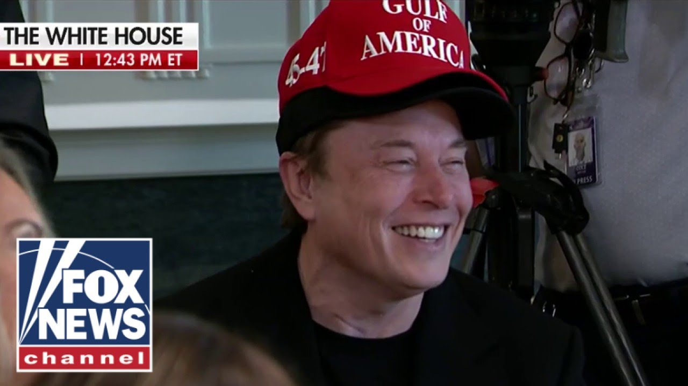

来B站一起耍【Global每日英语简报】
【埃隆·马斯克退出狗狗币，开玩笑称左翼人士“烧我的车”】
Summary: Elon Musk humorously discusses his hat style, achievements of the administration, and gratitude for support while joking about critics.
摘要： 埃隆·马斯克幽默地谈论了他的帽子风格、政府的成就以及对支持的感激，同时调侃了批评者。

⏱️ Estimated Reading Time: 3 min
Elon, I love the double hat, by the way.
顺便说一句，埃隆，我喜欢你的双层帽子。
He's the only one that can do that.
他是唯一一个能这样做的人。
Get away with it.
还能安然无恙。
Well, this president, you know, they say I wear a lot of hats.
这位总统，你知道，他们说我有许多身份。
It's true.
这是真的。
Even my hat has a hat.
甚至我的帽子还有一顶帽子。
Um, so um you know, the American people voted for secure borders, safe cities, and sensible spending.
美国人民投票支持安全的边境、安全的城市和合理的支出。
And that's what they've gotten.
这就是他们得到的。
A tremendous amount has been accomplished in the first 100 days.
在前100天里取得了巨大的成就。
As everyone has said, it's more than has been accomplished in any administration before uh ever.
正如大家所说，这比以往任何一届政府取得的成就都要多。
Period.
就是这样。
Um so uh this is this portends very well for what happened for the rest of the administration.
这对政府接下来的工作预示得很好。
Um I think this could be the greatest administration in your country.
我认为这可能是你们国家最伟大的政府。
Well, we all want to thank you for your help.
我们都想感谢你的帮助。
You know, you s you really have sacrificed a lot been treated very unfairly.
你知道，你真的牺牲了很多，受到了非常不公平的对待。
Well, this they do like to rent my cars, which is not great, you know.
他们确实喜欢租我的车，这不太好。
But you have been treated unfairly.
但你受到了不公平的对待。
But the vast majority of people in this country really respect and appreciate you.
但这个国家的大多数人真的尊重并感激你。
And this whole room can say that very strongly, really been a tremendous help.
整个房间的人都可以非常强烈地表示，你真的帮了大忙。
You opened up a lot of eyes as to what could be done.
你让很多人看到了可以做什么。
And we just want to thank you very much.
我们只想非常感谢你。
And uh you know, you're invited to stay as long as you want.
你知道，你被邀请想待多久就待多久。
at some point.
在某个时候。
I guess he wants to get back home to his cars and his done an incredible uh job.
我猜他想回到他的车那里，他做了一份不可思议的工作。
$150 billion.
1500亿美元。
Think of that.
想想看。
Yeah.
是的。
They said, "Oh, it could be more."
他们说，“哦，可能会更多。”
And uh a lot of, you know, a lot of stuff is being worked on.
你知道，很多工作正在进行中。
That number could be doubled and even tripled.
这个数字可能会翻倍甚至三倍。
A lot of things are being worked on that we don't count yet because it's not quite there, but uh you've done a fantastic job and we appreciate it very much.
很多事情正在进行中，我们还没有计算，因为还没有完全到位，但你做得非常出色，我们非常感激。
You know, thank you.
你知道，谢谢你。
And it's it's also an honor to work with your incredible cabinet.
与你们出色的内阁合作也是一种荣幸。
I just like to say thank you everyone for, you know, it's great to work with you.
我只想说谢谢大家，和你们一起工作很棒。
Thank you very much.
非常感谢。
Thank you.
谢谢。
I'm Steve Ducey.
我是史蒂夫·杜西。
I'm Brian Kilme.
我是布莱恩·基尔梅。
And I'm Anley Airhart.
我是安利·艾尔哈特。
And click here to subscribe to the Fox News YouTube page to catch our hottest interviews and most compelling analysis.
点击这里订阅福克斯新闻YouTube频道，获取我们最热门的采访和最引人入胜的分析。